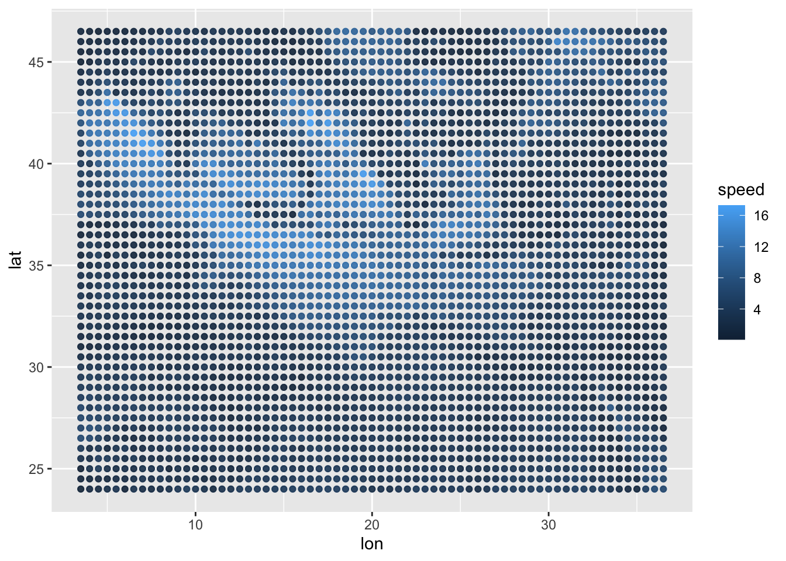
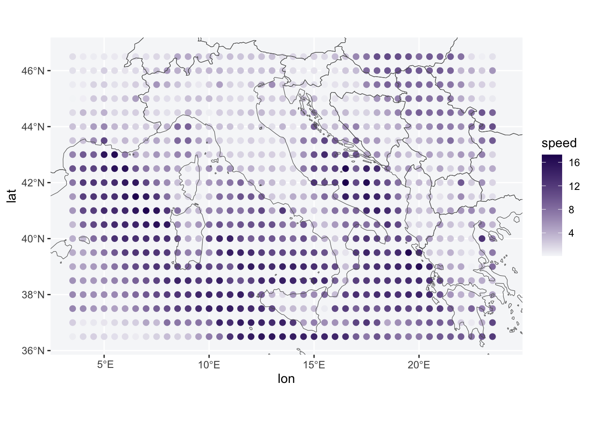
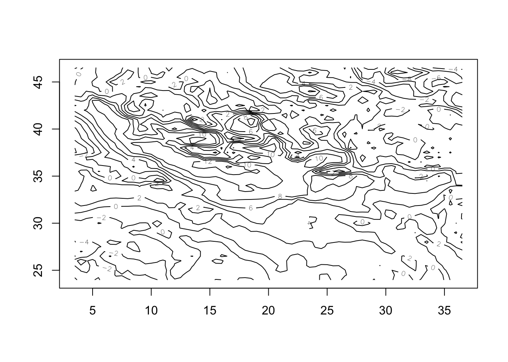
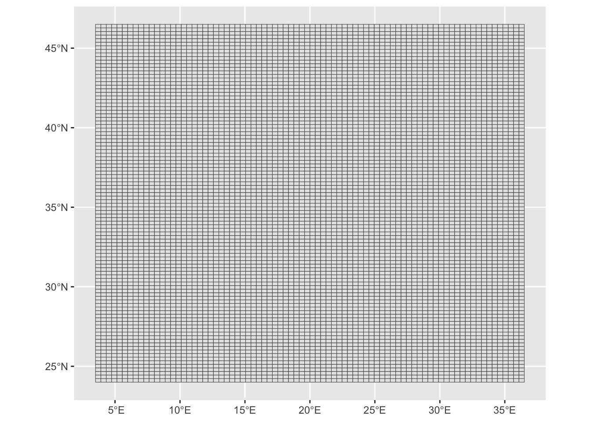
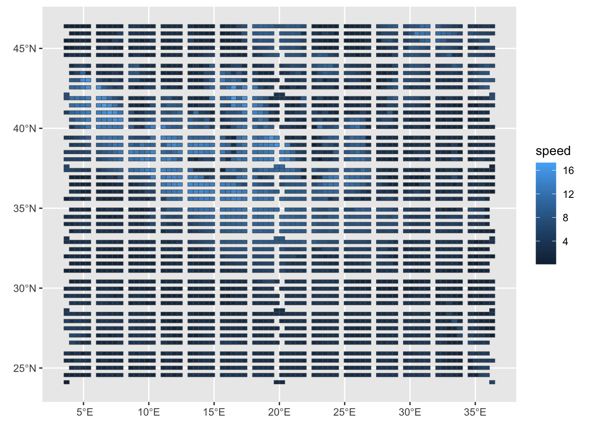
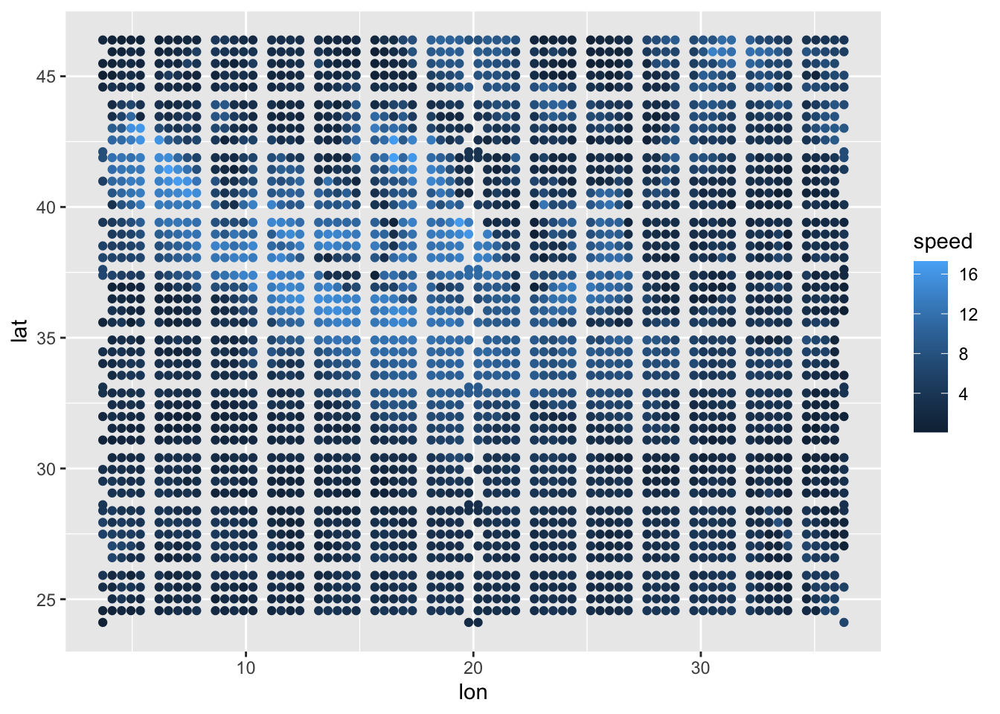
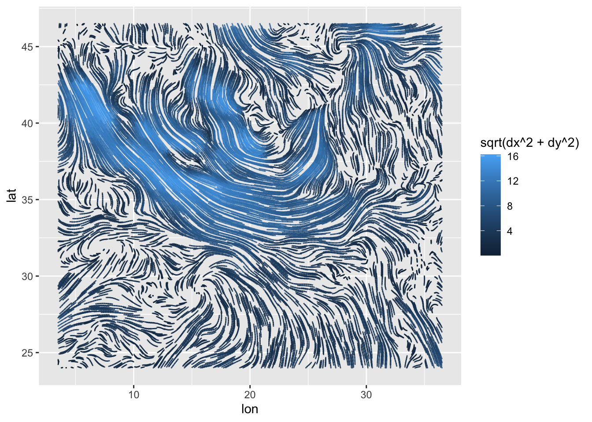
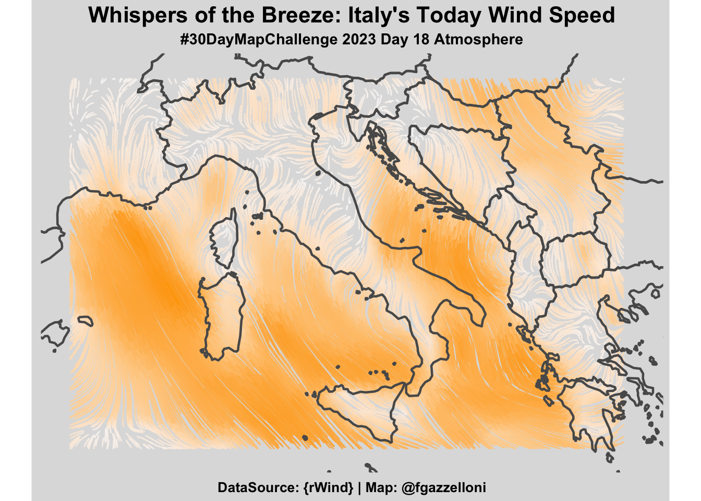

library(tidyverse)
library(sf)
library(giscoR)
library(classInt)
library(metR)
# install.packages("rWind")
# install.packages("oce")
library(rWind)
library(oce)Overview
This challenge is all about wind movements. The selected area is Italy, also some parts of the surrounding territories can be seen. I am going to use the {rWind} package for downloading the information about wind speed and direction vectors (u,v) for today, Nov 18, 2023.
In order to be able to interpolate the information from {rWind}, I’ll use the {oce} package which provide a type of interpolating function for calculating the Barnes interpolation with: oce::interpBarnes() function.
Load necessary libraries
Set the Date
time_range <- seq(ymd_hms(paste(2023, 11, 18, 00, 00, 00,
sep = "-")),
ymd_hms(paste(2023, 11, 18, 00, 00, 00,
sep = "-")),
by = "1 hours"
)Download Data from {rWind}
mean_wind_data2 <- rWind::wind.dl_2(time_range,
3.472, 36.368, 23.906, 46.665) %>%
rWind::wind.mean()[1] "2023-11-18 downloading..."eur_wind_df2 <- as.data.frame(mean_wind_data2)
eur_wind_df2%>%head time lat lon ugrd10m vgrd10m dir speed
3016 2023-11-18 46.5 3.5 0.1880054 1.34282470 7.970025 1.3559219
3017 2023-11-18 46.5 4.0 -0.3119946 0.68282470 335.443507 0.7507264
3018 2023-11-18 46.5 4.5 0.2880054 0.48282468 30.816114 0.5621981
3019 2023-11-18 46.5 5.0 0.7280053 0.34282470 64.783804 0.8046866
3020 2023-11-18 46.5 5.5 -0.5019946 -0.53717530 223.061014 0.7352251
3021 2023-11-18 46.5 6.0 -0.7519946 -0.03717529 267.169854 0.7529129Quick look at the first grid
ggplot(eur_wind_df2)+
geom_point(aes(lon,lat,color=speed),size=1.5,alpha=0.9)
Download the polygons for Europe
eur_sf <- giscoR::gisco_get_countries(
year = "2020", epsg = "4326",
resolution = "10", region = c("Europe", "Asia")
)Have a look at the first level map
ggplot(eur_wind_df2)+
geom_point(aes(lon,lat,color=speed),size=2)+
geom_sf(data=eur_sf,inherit.aes = F,
fill=NA,
show.legend = F)+
scale_color_gradient(low="#f6f7f9",high = "#250c5f")+
scale_x_continuous(limits = c(3.472,23.906))+
scale_y_continuous(limits = c(36.368,46.665))+
theme(panel.background = element_rect(color="#f6f7f9",fill="#f6f7f9"))
Interpolation
Here I try to make the Barnes interpolation on the first level grid.
oce::interpBarnesAnd have a look at the information provided with the contour() function.
wu <- oce::interpBarnes(
x = eur_wind_df2$lon,
y = eur_wind_df2$lat,
z = eur_wind_df2$ugrd10m
)
wv <- oce::interpBarnes(
x = eur_wind_df2$lon,
y = eur_wind_df2$lat,
z = eur_wind_df2$vgrd10m
)
contour(wu$xg,wu$yg,wu$zg)
Set a second level grid
eur_wind_pts <- eur_wind_df2 %>%
sf::st_as_sf(coords = c("lon", "lat")) %>%
sf::st_set_crs(4326)
eur_wind_pts Simple feature collection with 3082 features and 5 fields
Geometry type: POINT
Dimension: XY
Bounding box: xmin: 3.5 ymin: 24 xmax: 36.5 ymax: 46.5
Geodetic CRS: WGS 84
First 10 features:
time ugrd10m vgrd10m dir speed geometry
3016 2023-11-18 0.18800537 1.34282470 7.970025 1.3559219 POINT (3.5 46.5)
3017 2023-11-18 -0.31199460 0.68282470 335.443507 0.7507264 POINT (4 46.5)
3018 2023-11-18 0.28800535 0.48282468 30.816114 0.5621981 POINT (4.5 46.5)
3019 2023-11-18 0.72800535 0.34282470 64.783804 0.8046866 POINT (5 46.5)
3020 2023-11-18 -0.50199460 -0.53717530 223.061014 0.7352251 POINT (5.5 46.5)
3021 2023-11-18 -0.75199460 -0.03717529 267.169854 0.7529129 POINT (6 46.5)
3022 2023-11-18 -0.08199463 -1.27717530 183.673347 1.2798046 POINT (6.5 46.5)
3023 2023-11-18 -0.86199460 0.84282470 314.355763 1.2055655 POINT (7 46.5)
3024 2023-11-18 -0.02199463 1.67282460 359.246707 1.6729692 POINT (7.5 46.5)
3025 2023-11-18 0.47800535 -1.37717520 160.858564 1.4577725 POINT (8 46.5) eur_wind_grid <- eur_wind_pts %>%
sf::st_make_grid(n = c(80, 100)) %>%
sf::st_sf() %>%
dplyr::mutate(id = row_number())Have a look at the second level grid
ggplot(eur_wind_grid)+
geom_sf()
Make an adjusted grid set
For more information about this type of analysis have a look at this tutorial: https://milospopovic.net/mapping-wind-data-in-r/
eur_wind_grid_agg <-
sf::st_join(eur_wind_pts, eur_wind_grid,
join = sf::st_within) %>%
st_drop_geometry() %>%
group_by(id) %>%
summarise(
n = n(), u = mean(ugrd10m),
v = mean(vgrd10m), speed = mean(speed)
) %>%
dplyr::inner_join(eur_wind_grid, by="id") %>%
dplyr::select(n, u, v, speed, geometry) %>%
sf::st_as_sf() %>%
na.omit()Visualize the adjusted grid
ggplot(eur_wind_grid_agg)+
geom_sf(aes(fill=speed))
Rebuild the original set with adding adjusted coordinates
The Centroids:
coords <- eur_wind_grid_agg %>%
st_centroid() %>%
st_coordinates() %>%
as_tibble() %>%
rename(lon = X, lat = Y)eur_df <- coords %>%
bind_cols(sf::st_drop_geometry(eur_wind_grid_agg))eur_df %>%
ggplot() +
geom_point(aes(lon,lat,color=speed))
Interpolation II
Repete the procedure with the adjusted grid.
wu <- oce::interpBarnes(
x = eur_df$lon,
y = eur_df$lat,
z = eur_df$u
)dimension <- data.frame(lon = wu$xg, wu$zg) %>% dim()udf <- data.frame(
lon = wu$xg,
wu$zg
) %>%
gather(key = "lata", value = "u", 2:dimension[2]) %>%
mutate(lat = rep(wu$yg, each = dimension[1])) %>%
select(lon, lat, u) %>%
as_tibble()wv <- oce::interpBarnes(
x = eur_df$lon,
y = eur_df$lat,
z = eur_df$v
)vdf <- data.frame(lon = wv$xg, wv$zg) %>%
gather(key = "lata", value = "v", 2:dimension[2]) %>%
mutate(lat = rep(wv$yg, each = dimension[1])) %>%
select(lon, lat, v) %>%
as_tibble()df <- udf %>%
bind_cols(vdf %>% select(v)) %>%
mutate(vel = sqrt(u^2 + v^2))head(df)# A tibble: 6 × 5
lon lat u v vel
<dbl> <dbl> <dbl> <dbl> <dbl>
1 3.5 24 0.698 0.141 0.712
2 4 24 0.448 0.0845 0.456
3 4.5 24 -0.525 0.0523 0.528
4 5 24 -1.20 0.377 1.26
5 5.5 24 -1.61 0.383 1.65
6 6 24 -1.01 1.30 1.65 Make the Map
df %>%
ggplot() +
metR::geom_streamline(
data = df,
aes(
x = lon, y = lat, dx = u, dy = v,
color = sqrt(..dx..^2 + ..dy..^2)
),
L = 2, res = 2, n = 60,
arrow = NULL, lineend = "round",
alpha = .85
) 
Make the map on polygons
df %>%
ggplot() +
metR::geom_streamline(data = df,
aes(x = lon, y = lat, dx = u, dy = v,
color = sqrt(..dx..^2 + ..dy..^2)),
L = 2,
res = 2,
n = 60,arrow = NULL,
lineend = "round",
alpha = .85) +
geom_sf(data = eur_sf,
fill = NA,
linewidth = 0.8,
alpha = .99) +
scale_x_continuous(limits = c(3.472,23.906))+
scale_y_continuous(limits = c(36.368,46.665))+
scale_color_gradient(low="#f6f7f9",high = "orange")+
labs(title="Whispers of the Breeze: Italy's Today Wind Speed",
subtitle="#30DayMapChallenge 2023 Day 18 Atmosphere",
caption="DataSource: {rWind} | Map: @fgazzelloni")+
ggthemes::theme_map()+
theme(legend.position = "none",
plot.background = element_rect(color="#dedede",fill="#dedede"),
plot.title = element_text(hjust=0.5,size=16,face="bold"),
plot.subtitle = element_text(hjust=0.5,size=11,face="bold"),
plot.caption = element_text(hjust=0.5,size=10,face="bold"))
ggsave("day18_atmosphere.png",
height = 5,
bg="#dedede")Resource
- https://milospopovic.net/mapping-wind-data-in-r/
- https://semba-blog.netlify.app/10/25/2018/processing-satellite-wind-speed-data-with-r/
- https://stackoverflow.com/questions/55583611/how-to-create-contour-with-wind-animation-using-gganimate
- https://www.r-bloggers.com/2018/11/plotting-wind-highways-using-rwind/